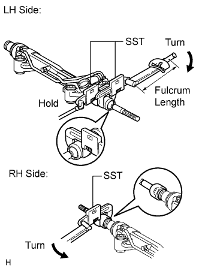
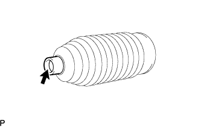
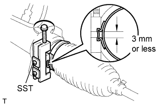
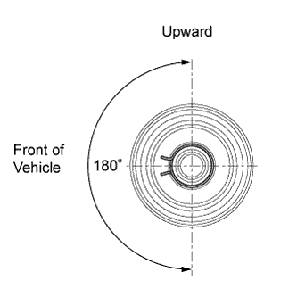

STEERING LINKAGE > REASSEMBLY |
| 1. INSTALL STEERING RACK END SUB-ASSEMBLY |
Temporarily install the 2 steering rack ends to the power steering rack.
Fill up the ball joint of the steering rack ends with MP grease.
 |
Using SST, install the power steering rack end (RH side) to the power steering rack.
Using SST and a wrench, install the power steering rack end (LH side) to the power steering rack.
| 2. INSTALL NO. 1 STEERING RACK BOOT |
 |
Apply silicon grease to the inside of the small opening of the boot.
Install the 2 boots to the groove on the rack housing.
| 3. INSTALL STEERING RACK BOOT CLAMP RH |
 |
Using SST, install a new boot clamp as shown in the illustration.
| 4. INSTALL STEERING RACK BOOT CLAMP LH |
| 5. INSTALL STEERING RACK BOOT CLIP RH |
 |
Using pliers, install the boot clip.
| 6. INSTALL STEERING RACK BOOT CLIP LH |